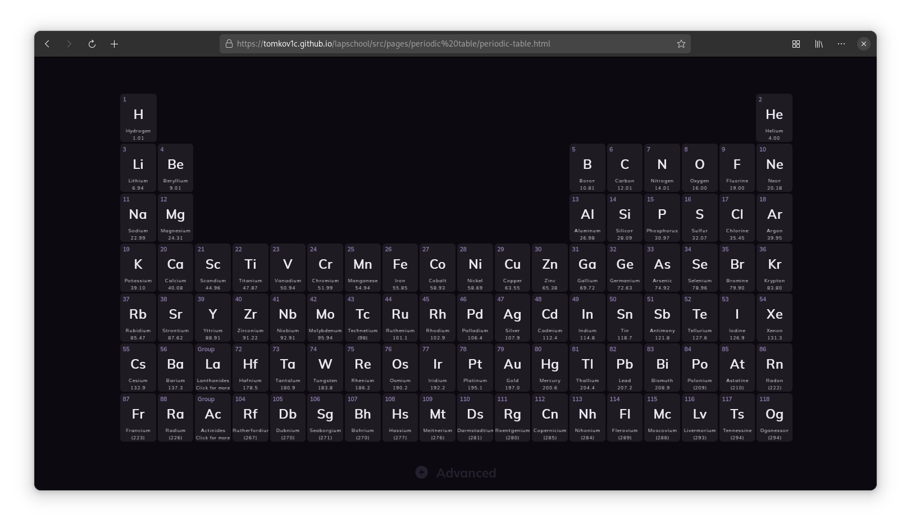

So in my 3rd year of high school, I constantly had to carry some paper database diagrams to my class. I used a laptop to take notes and after some time it became annoying to carry that one specific piece of paper around, so I thought "Why not just digitalize it?", so I did. It accrued to me that other students may have the same problem.
This is the result. Lapschool is just a place where you can find a lot of diagrams, tools and more digitalized and interactive on a computer so you won't have to carry anything with you to classes, just your laptop.
Tools
Over the course of the development, I'll port tools, charts, etc. and make them more interactive.
The Periodic Table
It has everything that a regular paper periodic table would have but I added some new feature.
Element Inspect
Is a feature that allows you to click on an element and it will display some additional things about the element. All elements are supported. All elements data is sourced from Wikipedia and shortened / modified by ChatGPT (3.0). Report any mistakes you find.
Advanced Settings
On the bottom screen is a button with additional features you can activate to make the use of the website easier. Settings are saved in the browser storage and will still be applied on page reload.
Lanthanides and Actinoids submenu
Display all La and Ac elements. All features are applied.
Case Converter
This quickly converts the text in input in the field to a desired caps (e.g. "hello world" => "HELLO WORLD") Avalable on mobile.